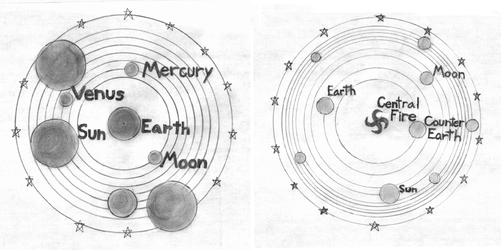

False Dichotomies
Only Two Sides
It's easy to divide almost every controversy into two sides. This is particularly apparent in nations with a predominantly partisan two-party system. You are a Progressive or a Conservative. You're either on the Left or the Right. For every issue, you can choose between position #1 and position #2. This extends beyond politics to science, religion, culture, and more.
When shown one opinion on an issue, it's easy to ask, "Is this view right?" That's roughly the right question to ask. However, when dealing with two opinions, we unconsciously change our question to, "Which view is right?" This is subtly problematic.
An Example from Cosmology
Cosmology provides the grounds of an interesting example of this. Let's examine two views of the configuration of the Earth, planets, and Sun prior to Copernicus1.
- The Ptolemaic System (Geocentrism) places the Earth in the center of the orbit of the Sun and planets. The sphere of fixed stars would sit beyond them, rotating at great speed, allowing the stars to pass around the earth once each day.
- The Pythagorean Model places a "central fire" at the center with the Earth, planets, and Sun orbiting it. The Sun does not produce light in itself, but rather reflects the light of the central fire. There is also a "Counter-Earth2," never visible from Earth itself.

Let us imagine one prior to Copernicus, where the only prevalent cosmological views are the above3.
Firstly, it is quite clear how unhelpful the question "Which view is right?" really can be. Both alternatives contain quite a bit of error.
Secondly, let's imagine an apologist for the Ptolemaic System. Perhaps he has some brilliant and persuasive argument against the Pythagorean Model. Checkmate! He's proven Geocentrism! Has he not? He disproved the Pythagorean Model. That means that Geocentrism is vindicated!
The flaw with our friend the apologist's reasoning is glaring! He is treating contraries as though they are contradictories. Given a pair of contradictories, one must be true and the other false. "A cow is a reptile." and "A cow is not a reptile." are contradictories. There is no third option. It must either be a reptile or not be a reptile. Contraries, on the other hand, cannot both be true, but there is also no guarantee that even one is true. An example of contraries would be "A cow is a reptile." and "A cow is an amphibian." These cannot both be true, and they can both be false. There may be many other options.
Do we not think like the apologist? Do we not see a point against Capitalism as a point for Socialism? Have we seen Christian apologists act as though disproving atheism would prove Christianity? Doing so is human nature.
Issue Bundling
By this point, it's quite clear why "Which view is right?" is limiting. However, there is a type of false dichotomy so dangerous that it can break our analysis across a multitude of issues simultaneously. Welcome to the twisted world of issue bundling!
Terms such as "Conservative" or "Progressive" lump a tremendous number of positions together. Does supporting gay marriage mean you also need to support stricter firearm regulations? Does endorsing stronger border enforcement mean you must also oppose government intervention in the economy? We can find tangential relationships between all things in the world, but does that mean that holding one political view forces you to adopt three-dozen others? It certainly shouldn't, but that is what we observe happening. You must join one team and adopt all of their views across a whole host of topics and disciplines. You may not mix and match! This is not only a false dichotomy of view; it is a false dichotomy of collections of views. If dozens of views are all simplified into two packages, "which package is right?" is a false dichotomy even if each individual issue truly only has two sides.
Manufactured Choice
False dichotomies are often the product of unwitting imprecise reasoning. Unfortunately, it can also be a purposeful tactic, like a magician forcing a card on an audience member. The illusion of free choice is maintained; nevertheless, the magician has fixed the outcome.
Our minds might first be driven to the use of issue bundling. We think of a thousand-page bill or budget in Congress. It has some things people want as well as a bunch of pork for special interests and donors. It's passed because of the things people like, and the other stuff sneaks through too because it's a packaged deal.
However, false dichotomies can be a much more crafty and inconspicuous instrument of control: a purposeful Ptolemy-versus-Pythagoras scenario.
One of the best examples of this was provided by modern Socialists in the United States. I'm talking about real Socialists, not just Bernie Sanders supporters. They reject Capitalism and see the elites as keeping Socialism down using a false dichotomy. They see the Conservatives as supporting hard-core Capitalism and the Progressives as supporting Capitalism softened with welfare, falsely called Socialism4. They see the Americans being given a false choice between Capitalism under the name "Capitalism" and Capitalism+Welfare under the name "Socialism." The people have a false sense of choice, while both roads lead to roughly the same outcome. Whether you agree with that analysis or not, it is a telling parable. A false dichotomy can be used to purposefully hide options and generate a false sense of choice.
Where This Leads
We now clearly see the danger of assuming the truth lies in the set of options presented to us. Perhaps no one will ever be fully immune to this assumption, but we can begin to strengthen ourselves against it by learning to pair "Which view is correct?" with "Is either view correct?" However, that's only the beginning, and this article is the first in a series about understanding truth and building one's mental model of reality. The next article will reveal why "Is either view correct?" itself can be a flawed question.
- It is notable that Copernicus wasn't truly the first to propose a sun-centered model. That distinction goes to Aristarchus in the 3rd century BC.
- The Pythagoreans' devotion to the perfection of the number 10 was largely the motivator here. Five known planets, one Earth, one Moon, one Sun, and one sphere of stars only account for 9. The Counter-Earth brings the total to 10.
- This is not particularly reflective of any point in history. The Pythagorean Model was not a true rival of the Ptolemaic Model for any documented period of time, and there were many variants of the Ptolemaic View. I am using cosmological debate as a parable, not a true historical analysis.
- The use of the term "Socialism" to refer to a welfare state with a free market economy is something I plan to write about in the future. It is difficult to categorize someone like Bernie Sanders as a Socialist in the historic sense.
| Published September 16, 2026 |
|---|